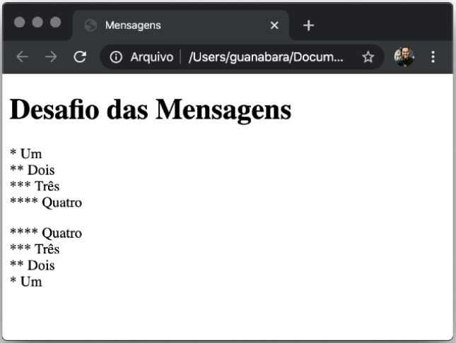

Exibir textos com uma mistura de parágrafos e quebras de linhas.
Você deve criar um código HTML que use apenas parágrafos (<p>) e quebra de linhas (<p>),
que gere o seguinte resultado visual:

IMPORTANTE: Note que a primeira contagem está separada da segunda,
isso é uma característica que vimos ao decorrer do material de exercícios.
Nada de usar vários tags <br> na sequência, hein?!
Ver o desafio